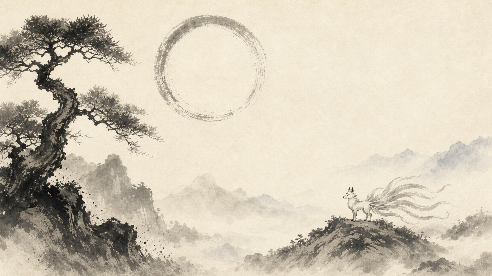
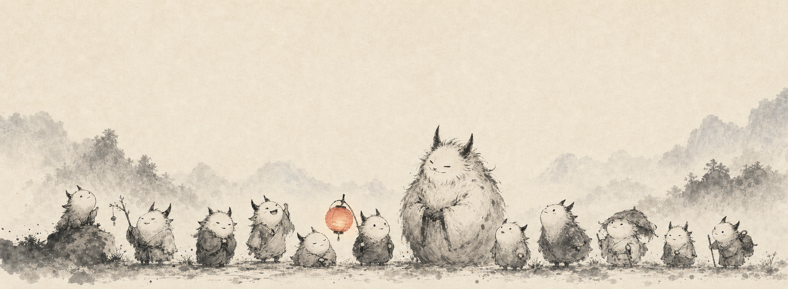
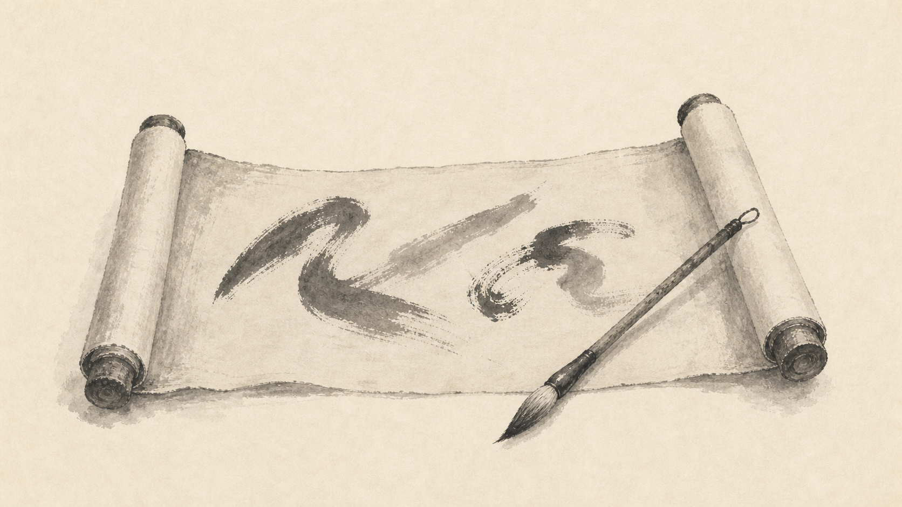
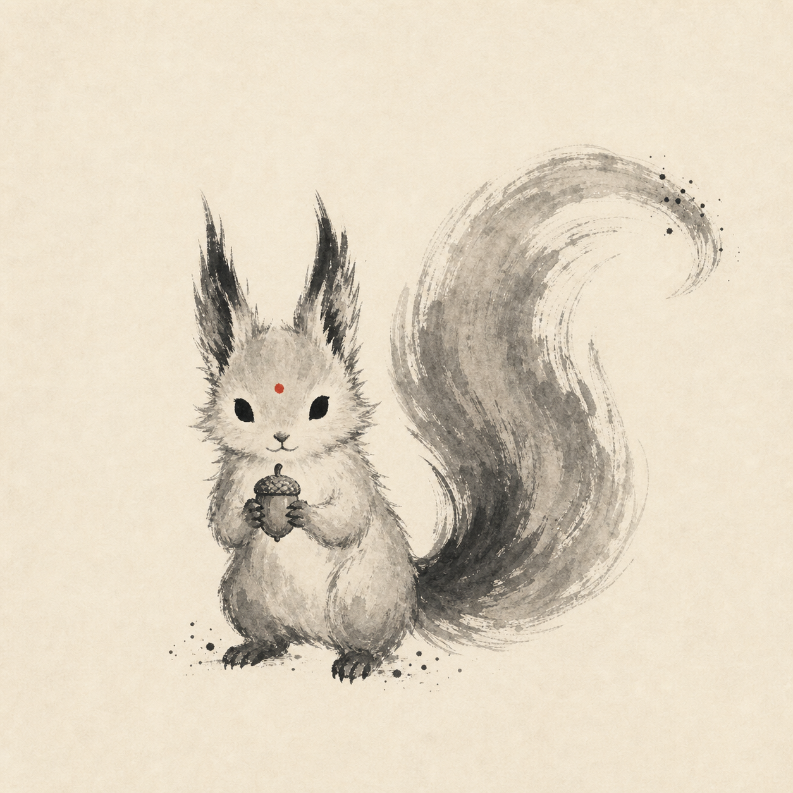
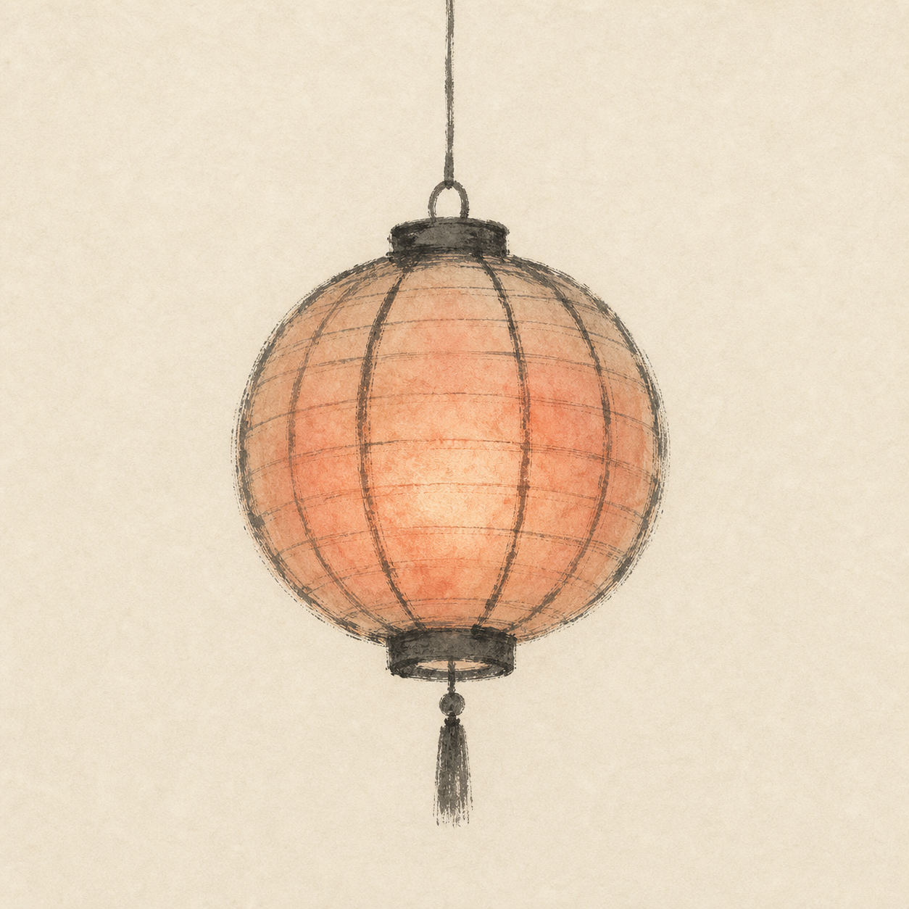
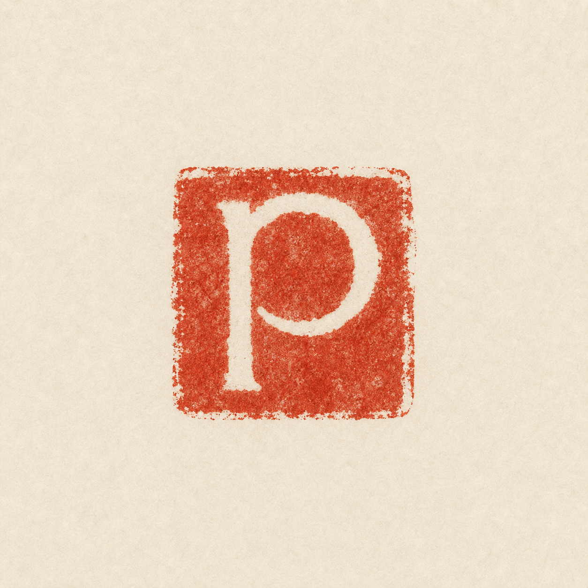

Hero band — approved material and restraint anchor.

Footer parade — eleven spirits, one guardian, one lantern.

Scroll ledger — quiet record-making object.

Squirrel spirit — ink-theme mascot.

Lantern — matte hanji, muted inner glow.

Seal — rough abstract p impression.